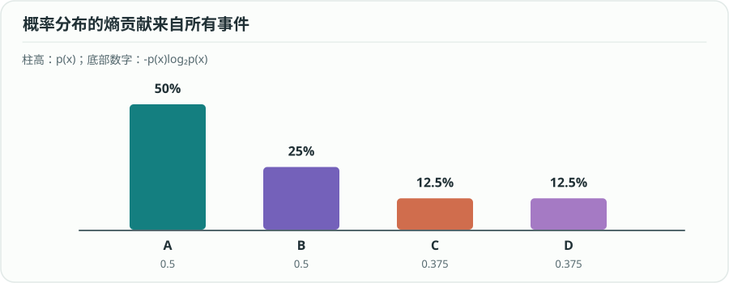

一条消息很意外，不代表整个信源难预测
设消息只可能是 A、B、C、D，概率分别为 1/2、1/4、1/8、1/8。观察到 D 会带来 3 bits 自信息，但这并不等于整个信源的熵。若每天绝大多数消息都是 A，平均不确定性应该比四选一完全均匀时更低。

熵就是自信息的期望
对离散随机变量 X 及概率质量函数 p(x)，香农熵把各事件的自信息按实际发生概率加权：
式中求和遍历 X 的全部离散取值，约定 0·log₂0=0（按极限定义）。对上例分别计算 0.5、0.5、0.375、0.375 bits，得到 H(X)=1.75 bits。若四个结果均匀，则熵达到 log₂4=2 bits。
二元熵曲线揭示最大不确定性
若 X 是伯努利变量，P(X=1)=p，P(X=0)=1−p，则熵可简写为 h₂(p)=-p log₂p-(1−p)log₂(1−p)。在 p=0 或 1 时结果确定，熵为 0；在 p=1/2 时最不确定，熵是 1 bit。

端点使用极限约定；图上的最大值只针对二元字母表。
联合熵、条件熵与链式法则
两个变量的联合熵 H(X,Y) 衡量要同时知道二者所需的平均信息量。条件熵 H(Y|X) 是已经知道 X 后，Y 还剩多少不确定性。
例如，令 X 是公平硬币，Y=X，则知道 X 后 Y 完全确定，H(Y|X)=0；联合熵仍为 1 bit，而不是 2 bits。如果 X、Y 是两次独立公平抛硬币，则 H(Y|X)=H(Y)=1 bit，联合熵变成 2 bits。
对离散变量，平均意义下条件作用不增熵：H(Y|X)≤H(Y)。这里比较的是按联合分布平均的条件熵，并不是声称每一个具体条件分布都比原分布更集中。
把公式写成可以执行的计算
from math import log2
def entropy(ps):
assert all(p >= 0 for p in ps)
assert abs(sum(ps) - 1) < 1e-12
return -sum(p * log2(p) for p in ps if p > 0)
assert abs(entropy([.5,.25,.125,.125]) - 1.75) < 1e-12
assert entropy([1, 0]) == 0
assert entropy([.5, .5]) == 1这个小函数只处理有限离散分布，不等同于连续变量的微分熵。它没有估计未知概率分布的能力；真实样本需要先定义估计方式和偏差评估。
边界、单位与可推广性
- 字母表有 M 个取值时，0≤H(X)≤log₂M；最大值在所有取值等概率时取得。
- 改变对数底数只改变数值单位，使用自然对数时单位是 nat。
- 熵不是“文件可以无条件压缩到 H(X) 位”：压缩定理有序列长度、无损重建和编码约束等前提。
来源与延伸阅读
本章使用有限离散分布和以 2 为底的对数，除非另有说明。以下经典原始与教学资料可以用来核验定义、假设和推导。
- Claude E. Shannon, A Mathematical Theory of Communication (1948) — 通信系统与熵的原始框架。
- Cover & Thomas, Elements of Information Theory, Chapter 2 — 熵、互信息、KL、Jensen 与 DPI 的系统性推导。
- MIT 6.441 Information Theory 讲义 — 可供复核定义与不等式的大学课程材料。